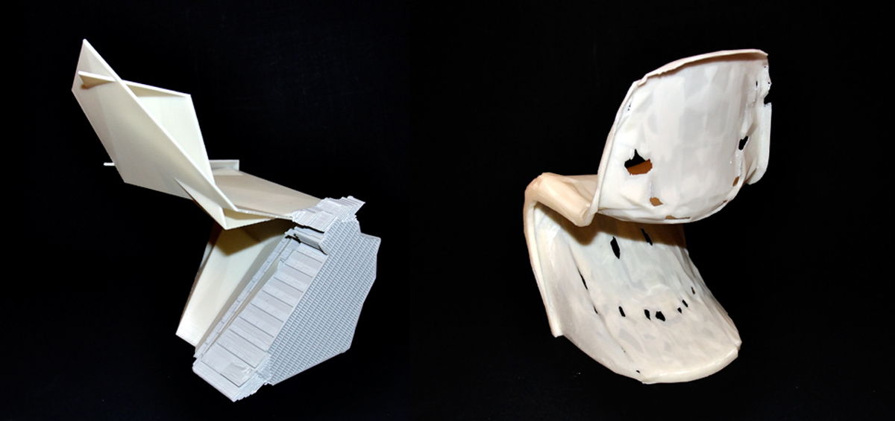

Objet Génétiquement Modifié
L’objet tend de nos jours à se dématérialiser sous forme de code informatique tant dans sa conception que dans sa fabrication. Ce projet interroge les enjeux de ces modes de création «post-industriel», ainsi que le rapport éthique qu’ils nous font adopter face à l’objet. Le projet s’appuie sur le design iconique de la Panton Chair. Dans un premier temps, la chaise a été numérisée par un scanner 3D afin d’obtenir une modélisation la plus exacte possible. Le fichier 3D a été compilé dans une édition de 422 pages de caractères imprimés en corps 4. Ce code informatique, en tant que fichier permettant de visualiser virtuellement la chaise, de la produire par impression 3D, voir d’en usiner un moule, est un code «génétique», dans le sens où il contient l’information nécessaire à la machine pour générer la chaise elle-même. La manipulation du code génétique du vivant est, pour des raisons philosophiques et industrielles, éthiques et managériales, un enjeu scientifique des plus importants. Ce projet se propose donc de déplacer quelque unes des expériences phares de laboratoires, telle que la transcription ou la transposition, du vivant à l’objet.Ces modifications du «code génétique» de la Panton Chair ont eu des répercutions formelles et structurelles importantes, créant des mutantes et des évolutions possibles de cette «espèce». Certaines mutations, étant trop importantes, ont empêché la machine de pouvoir générer la chaise ; d’autres ont permis d’obtenir de nouveaux modèles, descendants directs de leur aïeule.
L’objet tend de nos jours à se dématérialiser sous forme de code informatique tant dans sa conception que dans sa fabrication. Ce projet interroge les enjeux de ces modes de création «post-industriel», ainsi que le rapport éthique qu’ils nous font adopter face à l’objet. Le projet s’appuie sur le design iconique de la Panton Chair. Dans un premier temps, la chaise a été numérisée par un scanner 3D afin d’obtenir une modélisation la plus exacte possible. Le fichier 3D a été compilé dans une édition de 422 pages de caractères imprimés en corps 4. Ce code informatique, en tant que fichier permettant de visualiser virtuellement la chaise, de la produire par impression 3D, voir d’en usiner un moule, est un code «génétique», dans le sens où il contient l’information nécessaire à la machine pour générer la chaise elle-même. La manipulation du code génétique du vivant est, pour des raisons philosophiques et industrielles, éthiques et managériales, un enjeu scientifique des plus importants. Ce projet se propose donc de déplacer quelque unes des expériences phares de laboratoires, telle que la transcription ou la transposition, du vivant à l’objet.Ces modifications du «code génétique» de la Panton Chair ont eu des répercutions formelles et structurelles importantes, créant des mutantes et des évolutions possibles de cette «espèce». Certaines mutations, étant trop importantes, ont empêché la machine de pouvoir générer la chaise ; d’autres ont permis d’obtenir de nouveaux modèles, descendants directs de leur aïeule.